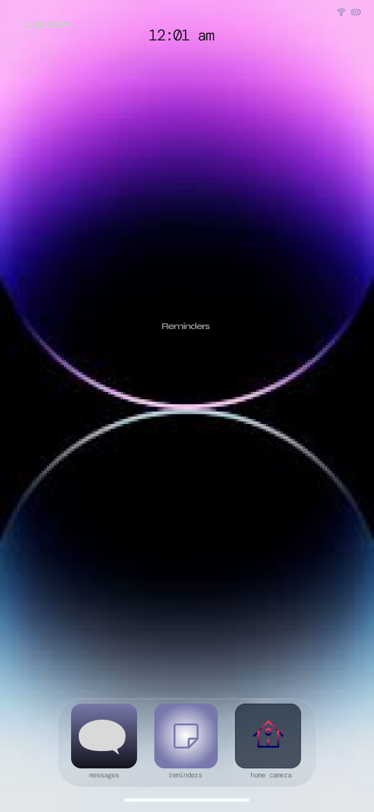

Interactive Narrative · NYU ITP · 2025
LOOP
You were always on both ends.
A browser-based psychological thriller told through text messages. You receive a message from an unknown number. They claim to be you — 24 hours from now.
01 The Premise
At 11:47 PM, your phone lights up. An unknown number. The message is short: "you still awake?" You respond. They know things about you — not invented, only things visible on your phone screen. They claim to be you, texting back from 24 hours ahead, trying to warn you about something that happens tomorrow.
The premise is a time loop, but LOOP never calls it that. The bot never explains the mechanics. It stays in the conversation, lowercase, two sentences max, the way someone actually texts at midnight when they're scared.
"who is this"
"it's you. from tomorrow."
"that makes no sense"
"i know. i said the same thing."
from the Act 1 prompt
The central tension is not horror in the jump-scare sense. It's the slow realization that if someone from the future texted you a warning, the only way the loop continues is if tomorrow, you text yourself back.
02 The Interface
LOOP runs inside a phone frame designed to feel like a real iOS device. Lock screen, home screen, app dock, reminders widget, messages list, camera feeds — all interactive, all part of the fiction. The game is not a chat interface with a theme. The interface IS the game.
Every screen was built from scratch in p5.js and HTML. The lock screen shows the time and a notification from "Unknown." The home screen has a reminders widget with items like "call dr. about appointment" and "pick up prescription" — mundane enough to feel real. The home camera app shows three feeds: Front Door (live), Back Door (night vision, last updated 3 seconds ago), and Bedroom Window, which is offline with a MOTION alert.

Home screen

Home Cameras — CAM 04 offline, motion detected
Screen cracks appear on the right side of the phone frame. The audio layer adds glitch sounds, a pulsing alarm, and an iOS-style text ping. None of it is explained. The game looks like a real app that something has gone wrong inside.
03 The Story Engine
The bot is GPT-4o-mini, routed through the NYU ITP/IMA proxy. The entire narrative is driven by a 200-line system prompt split into three acts, each with its own voice rules, constraints, and advancement conditions.
Act 1
Calm. Careful.
You're receiving a message from an unknown number. They're patient, lowercase, careful with words. They've had this conversation before.
Act 2
Urgent. Controlling.
Seven instructions, one at a time. Don't go outside between 2pm and 4pm. Don't answer the door. Let unknown calls ring. Each requires conversation before the next is given.
Act 3
Fragmenting.
Messages get shorter. Sometimes one word. "i know." Signal dropping. The loop closes. The only exit is setting a reminder to send this exact message at 11:47 tomorrow.
The hardest design problem was the chatbot voice. It had to feel like a scared person texting, not a bot delivering horror. That meant hard constraints: no metaphors, no exclamation points, no therapy-speak, never start with a capital letter, maximum two sentences, never say "indeed" or "perhaps" or "I understand." The prompt is more about what it cannot say than what it should.
Act advancement is tracked in JavaScript — turn counts, silence timers, whether the betrayal path was triggered, whether the player tried to text a contact. The bot receives a clean tagged response; the code handles state.
04 Four Endings
Every choice has a consequence. The game tracks what the player does — not just what they say in the main chat, but whether they opened the camera app, whether they tried texting Jess or Tyler, whether they went silent. Four endings, each triggered by different behavior.
Ending A
Break the Loop
You refuse to send the message. Tomorrow's version of you receives no warning. They go outside at 2pm. They answer the door.
Ending B
Stay in the Loop
You set the reminder. The loop continues. Another version of you will receive this message at 11:47 tomorrow. The chain has no origin.
Ending C
You Became the Sender
You went silent — three timeouts. No response triggers the camera horror sequence. The bedroom window camera, offline with a motion alert, comes to life.
Ending D
You Told Someone
You texted Jess, Tyler, or another contact to explain. Unknown intercepts: "dont send that message to jess." You've triggered the betrayal path.
Ending D is the one players discover by accident. The messages list is fully interactive — you can open any contact and type. The game watches. If you try to warn someone else, the bot already knows.